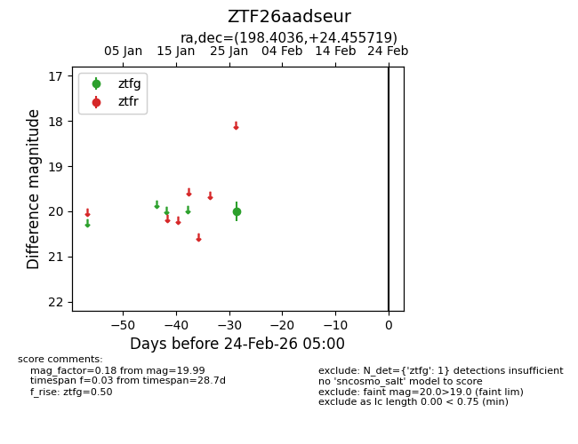
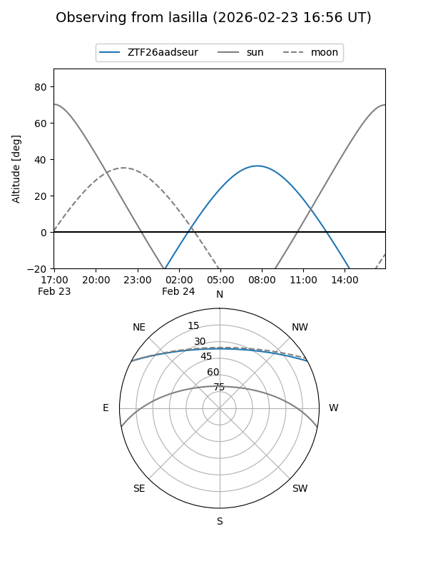
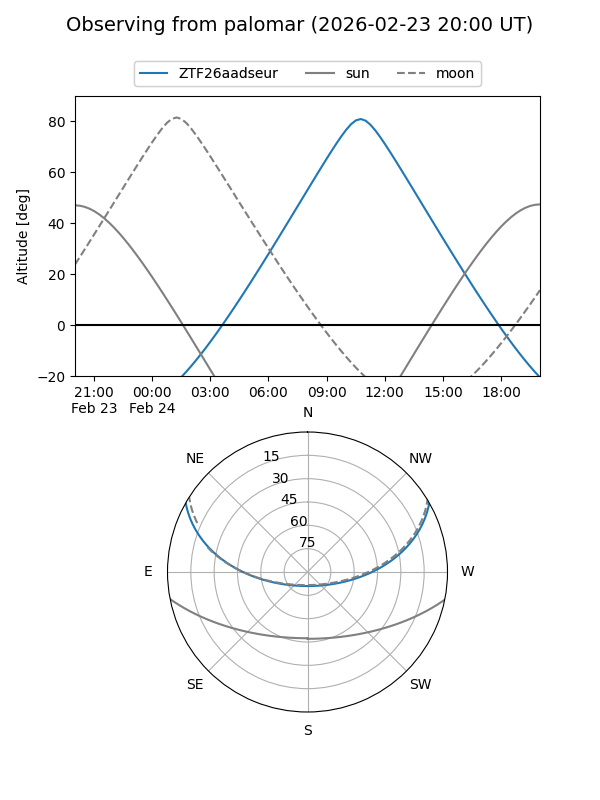

ZTF26aadseur
Target ZTF26aadseur at 2026-01-26 13:46
Aliases and brokers:
FINK: link
Lasair: link
ALeRCE: link
alt names
ZTF26aadseur (ztf,fink_ztf)
Coordinates:
equatorial (ra, dec) = 198.4036,+24.45572
equatorial (HMS+DMS) = 13:13:36.87,+24:27:20.59
galactic (l, b) = (5.9962,+84.33877)
Flags:
Photometry:
last ztfg=19.99
1 ztfg detections
Lightcurve

Visibility


Additional plots